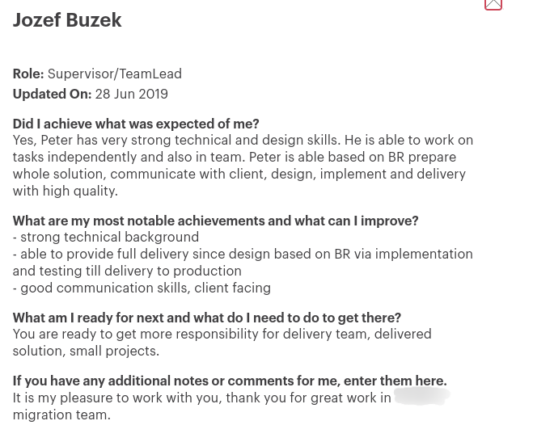
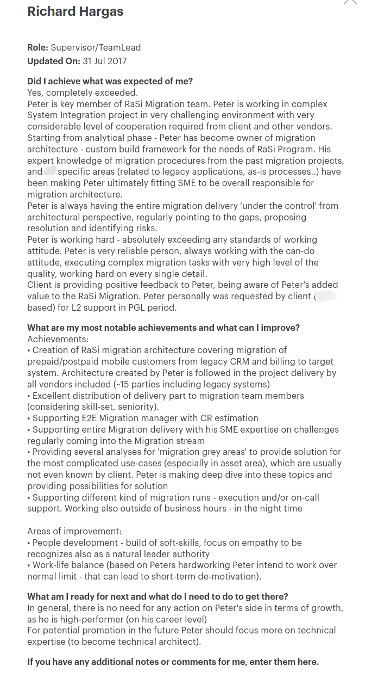
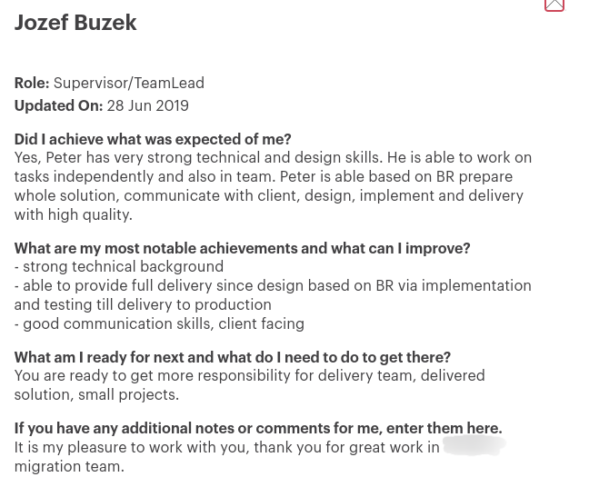
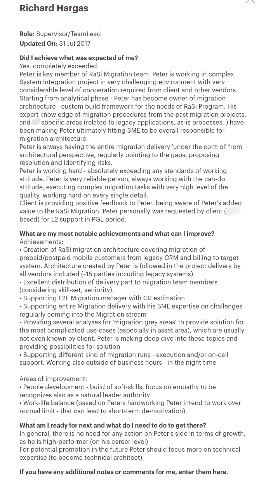

Overall, I am a dedicated Oracle database backend developer who excels in data migrations, possesses
a comprehensive understanding of the software development life cycle, and possesses skills in DevOps
and automation. I am committed to delivering high-quality solutions and contributing to the success
of every project I undertake.
As an enthusiastic developer, I have independently created several personal applications using
Oracle APEX. These applications showcase my skills and proficiency in utilizing the Oracle APEX
framework to design and develop functional and user-friendly solutions.
If you would like to explore these applications and experience their features firsthand, I can
provide you with the necessary credentials for logging in.
At Accenture, I gained extensive experience working with various technologies across diverse
projects and roles. Collaborating within both local and multi-country teams, my primary area
of expertise focused on end-to-end data migrations and robust database development.
Throughout my career, I successfully utilized source control, DevOps methodologies, and AWS
services, while also leveraging provisioning tools such as Ansible, Terraform, and
CloudFormation. Additionally, I possess proficiency in Linux/Windows scripting.
Within the realm of database development, I am well-versed in essential components including
procedures, triggers, packages, functions, partitions, jobs, collections, and performance
tuning. I have consistently demonstrated my expertise in these areas. For further details
about the projects I have contributed to, please refer to the following pages.
Credit Suisse Life Pensions (now Uniqua)
In my role as a System Administrator at a pension and life insurance company, I assumed
responsibility for various key tasks. This included the administration of Windows servers,
ensuring their smooth operation, and managing software and hardware installations.
Additionally, I took charge of maintaining the active directory users, performing regular
backups, and providing reliable end-user support.
To further expand my skill set in SQL, I proactively developed ad-hoc reports for the
management team, enhancing their decision-making processes. Moreover, I actively engaged in
effective communication with sub-contractors, fostering productive collaborations.
Overall, my tenure as a System Administrator encompassed a diverse range of
responsibilities, demonstrating my proficiency in Windows server administration, end-user
support, SQL reporting, and effective contractor coordination.
CCW s.r.o.
In my position as a PC Technician at this company, I held a critical role in PC assembly and
software installation. With meticulous attention to detail, I efficiently assembled PCs,
ensuring their proper functionality and performance.
Sizar Group s.r.o.
I actively participated in a project involving manual OCR (Optical Character Recognition)
for documents. In this initiative, I contributed to the digitization process by manually
extracting and transcribing text from physical documents, ensuring accurate and reliable
conversion.
By meticulously performing OCR tasks, I played a crucial role in converting hardcopy
documents into digital formats, enabling easier accessibility and searchability of
information. This experience allowed me to refine my attention to detail and develop
proficiency in data entry and document management.
Education & Certification
Nato Personnel Security Clearance Certificate
Classification Level: Nato Secret
Personnel Security Clearance Certificate for EU
Classification Level: EU Secret
Personnel Security Clearance Certificate
Classification Level: Secret
Technical Certifications
University of Economics in Bratislava
University of Ss. Cyril and Methodius in Trnava
Informatics
Secondary School of Electrical Engineering
Electronic Computer Systems
Technical Skills
AWS Athena (Presto SQL)
Oracle PL/SQL
SQL
Siebel EIM
Docker (self hosting)
Linux
Ansible
Git, SVN
HTML5
AWS Cloud Formation
Bash
Postgress pgSQL
Oracle APEX
T-SQL
Github Actions
MySQL
CSS
Qlik Sense
Terraform
Python
PowerShell
Jenkins
Accenture Projects
From
To
Project / Client
Role
Description
Technologies
Predictive Maintenance for Electrical Poles in a US Energy Company
Cloud Engineer
The aim of this project was to develop a predictive maintenance solution for electrical poles in a US energy company. The primary goal was to leverage advanced data analytics and machine learning techniques to predict potential damages on electrical poles. By implementing this predictive maintenance solution, the project aimed to proactively identify poles at risk of failure or damage, enabling the energy company to take preventive measures and avoid costly service disruptions.
In my responsibilities I extended Aurora PostgreSQL (serverless v1) and AWS Athena, specializing in data
modeling and integration. Additionally, I have actively contributed to DevOps changes,
including Infrastructure-as-Code (IaaC) modifications using CloudFormation.
Moreover, I have played a significant role in the merge request review process,
particularly for database and backend-related changes. My involvement in these reviews
ensures the quality and integrity of the codebase, facilitating seamless collaboration
and efficient project delivery.
Throughout the project, I took the initiative to design and implement several changes
that significantly enhanced the team's efficiency during deployments to higher
environments. By introducing streamlined processes and optimizing configurations, I
effectively reduced deployment time and improved overall productivity.
Furthermore, I undertook the responsibility of consolidating databases, resulting in
substantial cost savings. By merging multiple Serverless database clusters into one
shared cluster, I successfully minimized monthly expenses by several hundred dollars.
It's worth noting that while consolidation was implemented, individual developers'
databases remained isolated, ensuring data integrity and privacy.
My contributions in designing efficiency-driven changes and executing cost-saving
measures demonstrate my ability to identify and implement practical solutions for
process improvement and resource optimization.
Oracle Database Upgrade and Platform Migration for European Union Agency
Database Administrator
The aim of this project was to upgrade the existing Oracle database from version 11g to 19c, while concurrently migrating the platform from Unix to Linux, for the European Union Agency. The project was conducted in close collaboration with Oracle consultants to ensure a seamless transition.
In my role, I took on the crucial responsibilities of database installation,
configuration, and upgrade, as well as data migration preparation. Specifically, I
focused on offline migration preparation utilizing data pump export and import methods.
Meanwhile, the Oracle consultants on the project were entrusted with handling real-time
replication using Golden Gate.
By effectively managing the offline migration preparation, I contributed to the overall
success of the project. This collaborative approach allowed for a comprehensive data
migration strategy, combining the strengths of both offline and real-time replication
methods.
My expertise in database installation, configuration, upgrade, and data migration
preparation, coupled with the collaborative engagement with Oracle consultants, resulted
in a well-executed and efficient data migration process.
Custom Data Warehouse Maintenance for Security Department
DWH Developer
The aim of this project was to maintain and enhance a custom-built data warehouse while implementing new data sources for the solution. The primary objective was to ensure the ongoing operation and optimization of the existing data warehouse while expanding its capabilities by integrating additional data sources.
In this project, I focused on performance tuning of existing database scripts,
implementing new processes, and integrating Python into the workflow.
I took a proactive approach to optimize the performance of database scripts, analyzing
query execution plans, identifying bottlenecks, and implementing appropriate tuning
techniques. By fine-tuning the scripts, I significantly improved query response times
and overall database performance.
Additionally, I played a pivotal role in implementing new processes to enhance the
efficiency and functionality of the system. This involved designing and developing
robust solutions using a combination of SQL and other technologies. Python integration
played a crucial part in automating tasks, enabling seamless data processing, and
facilitating efficient workflows.
By combining my expertise in database performance tuning with the power of Python
integration, I successfully contributed to an optimized and streamlined system. The
improved performance of the database scripts and the successful implementation of new
processes demonstrate my ability to drive efficiency and enhance productivity within a
project.
MySQL, Linux Shell Scripts, Python, Git (Gitlab)
Re-implementation of On-Premises Data Warehouse to Cloud Data Warehouse using AWS Athena
DWH Developer
The aim of this project was to re-implement an existing on-premises data warehouse into a cloud-based data warehouse solution using AWS Athena. The primary objective was to migrate the existing data warehouse infrastructure to the cloud, leveraging the benefits of AWS Athena's serverless and scalable architecture.
In the project, I played a pivotal role in the creation of ETL (Extract, Transform,
Load) processes for a new data warehouse built on AWS S3, employing a data vault-like
methodology. My responsibilities included designing and implementing transformation
processes to efficiently transform data according to data vault principles, and loading
it into the target data Athena database.
Throughout the development lifecycle, I actively participated in the pull request review
process, meticulously assessing code changes to ensure the highest possible quality. By
conducting thorough reviews, I contributed to maintaining data integrity, adherence to
best practices, and overall system reliability.
The aim of this project was to migrate data from legacy systems into a new solution. The primary objective was to ensure a smooth and successful transition of data from the outdated and disparate legacy systems to a modern, consolidated solution.
In this project, I took on the task of modifying an existing data migration framework
specifically designed for B2B customers' migration.
My primary focus was on enhancing the data migration process to ensure a smooth and
efficient transition for B2B customers. This involved analyzing the existing framework,
identifying areas for improvement, and implementing necessary modifications.
By leveraging my expertise in data migration techniques and frameworks, I successfully
optimized the existing solution to accommodate the unique requirements and complexities
associated with B2B customer migrations. I enhanced data mapping, transformation, and
validation processes to guarantee accurate and reliable data migration.
Oracle 11g SQL, PL/SQL, Git (BitBucket)
Radical Simplification
Data Migration Technical Lead, Data Architect
The aim of this project was to migrate data from legacy systems into a new solution. The primary objective was to ensure a smooth and successful transition of data from the outdated and disparate legacy systems to a modern, consolidated solution. Multiple vendors responsible for target systems were involved.
As the Migration Technical Lead, I held a key role in the project, responsible for
overseeing the data migration architecture, defining the strategy, and determining the
approach for the migration process. This involved analyzing the existing systems,
identifying migration requirements, and designing a comprehensive plan to ensure a
successful migration.
In addition to the strategic aspects, I actively participated in the standard tasks
associated with data migration. This included designing migration workflows, building
the necessary infrastructure, conducting thorough testing, and providing ongoing support
to ensure a smooth transition.
Furthermore, as a team leader, I managed and coordinated the activities of the migration
team. This involved assigning tasks, monitoring progress, and providing guidance and
support to team members to ensure efficient and collaborative work.
By assuming these responsibilities, I contributed to the overall success of the data
migration project. My expertise in data migration architecture, strategy development,
and team management enabled the seamless execution of the migration process while
ensuring adherence to quality standards.
Migration involved complex data transformations from approximately 15 legacy systems,
including BSCS, Clarify, and the Data Warehouse. To facilitate this process, we utilized
a custom-built migration framework developed in PL/SQL, which included additional custom
modules specifically tailored for the client's needs.
This in-house migration framework served as an ETL orchestrator, providing parallel
execution capabilities to optimize performance. We adopted a phased approach for
migrating B2C customers, with four migrations per month spread over two months. For B2B
customers, a long-term migration plan was implemented based on an input list.
To streamline the deployment and release process for database changes, I took the
initiative to create a simple yet effective tool using PowerShell and CSV configuration.
This tool automated the preparation of deployment packages, enabling smoother and more
efficient database changes for production environment.
Oracle 11g SQL, PL/SQL, PowerShell, mkDocs, SVN
Support and Maintenance for Telco Operator
Developer
The aim of this project was to provide ongoing support and maintenance services to a telecommunications (telco) operator. The primary objective was to ensure the smooth and uninterrupted operation of the telco operator's systems and infrastructure.
I took responsibility for developing smaller data migrations to facilitate data updates
in BSS (Business Support Systems) systems.
These smaller data migrations were designed to handle specific data updates within the
BSS systems. Using my expertise in data manipulation and scripting languages such as
SQL, I developed scripts and queries to process data in a targeted manner.
These migrations were executed as needed, ensuring that the data remained up to date and
aligned with the business requirements.
Oracle 11g SQL, PL/SQL, SVN
Salesforce.com Implementation in Multiple Countries for Global Pharma
Functional and Technical Team Lead for small migration team
The aim of this project was to implement Salesforce.com, a leading customer relationship management (CRM) platform, in multiple countries.
As part of the data migration team, I collaborated to develop a reusable framework for
data migration, which was utilized by each country involved in the project. This
framework was built using Microsoft T-SQL and driven by PowerShell scripts, enabling
efficient data cleansing, transformation, and loading processes into the Salesforce
platform.
The framework provided a standardized approach to data migration, ensuring consistency
and reliability across multiple countries. It leveraged the power of T-SQL to perform
data manipulation tasks, such as data cleansing and transformation, to align the data
with the requirements of the Salesforce platform.
The PowerShell scripts acted as the orchestrator, coordinating the execution of various
migration steps, invoking the T-SQL scripts, and handling the necessary data loading
processes. This automation streamlined the data migration workflow and reduced manual
effort, enhancing overall efficiency.
The reusability of the framework allowed each country to leverage the established best
practices and standardized processes, accelerating the data migration process while
maintaining data integrity and quality.
Additionally, we leveraged the user-friendly interface of MS Excel for migration
progress monitoring. We developed a graphical user interface (GUI) using MS Excel,
allowing stakeholders to track the progress of the migration in a visually intuitive
manner. This provided transparency and real-time visibility into the migration process.
By combining the parallel execution capabilities of MS SQL, PowerShell integration with
Salesforce data loader, and progress monitoring via MS Excel, we created a comprehensive
migration framework that ensured efficient data migration, seamless integration, and
effective progress monitoring.
The integration of these technologies streamlined the migration process, improved
efficiency, and provided clear insights into the migration progress for stakeholders.
The collaborative efforts in designing and implementing this framework resulted in a
successful migration project, enabling a smooth transition of data into the Salesforce
platform.
Microsoft T-SQL, PowerShell scripts, Salesforce Data Loader, SVN
Next Generation CRM for Telco Operator
Analyst, Developer, Junior Data Architect
The aim of this project was to take over the implementation of a solution from a vendor who was unable to deliver the project on time, within budget, and with sufficient quality. The primary objective was to rescue the project, bring it back on track, and ensure its successful completion.
As a key contributor to the project, I played a vital role in shaping the solution,
defining the data migration strategy, and outlining the approach for daily batch
integration using the Siebel EIM (Enterprise Integration Manager) component.
Furthermore, I collaborated closely with stakeholders to gather their input and ensure
that the solution aligned with their needs and expectations. Regular communication and
feedback loops were established to fine-tune the solution and address any emerging
challenges.
We successfully executed a big-bang data migration approach, migrating
over 90 million records within a tight time frame of 48 hours. To achieve this, we
utilized an in-house built PL/SQL framework, originally created for another project,
which served as an ETL orchestrator with parallel execution capabilities.
The framework efficiently coordinated and managed the data migration process,
orchestrating the extraction, transformation, and loading tasks in parallel to expedite
the overall migration timeline. We leveraged the scheduling capabilities of Oracle's
dbms_job to ensure optimized task execution and timely completion.
To maintain data isolation and integrity, we employed Oracle's virtual private database
(VPD) feature within the framework. This allowed us to enforce data segregation and
access controls, ensuring that each set of data remained isolated and secure during the
migration process.
This approach demonstrated our ability to optimize performance, manage large-scale data
migrations, and ensure secure data handling during the migration process. The successful
execution of the migration project showcased our expertise in leveraging in-house tools
and Oracle database features to deliver efficient and reliable data migration solutions.
Siebel Upgrade and Re-implementation from 6.3 to 8.1.9 in a Multi-Vendor Environment
Analyst, Developer
The aim of this project was to upgrade the existing Siebel CRM system from version 6.3 to 8.1.9. However, due to the high level of customization present in Siebel 6.3, it was determined that a re-implementation approach would be more suitable. The project was conducted in a multi-vendor environment, involving collaboration and coordination among different vendors.
In this project, we took on the responsibility of extracting and transforming data from
the Siebel 6.3 system and providing it to the vendor responsible for implementing the
new solution.
To accomplish this, we conducted a thorough analysis of the data structures and business
requirements within the Siebel system. Leveraging my expertise in data extraction and
transformation, I developed an efficient process to extract the necessary data from
Siebel 6.3. Next, we applied appropriate transformations to align the data with the
format and requirements of the vendor's new solution. This involved data mapping,
cleansing, and restructuring to ensure seamless integration and compatibility with the
new system.
ETL in Informatica PowerCenter, Oracle 11g SQL, PL/SQL, SVN
Implementation of New Sales Force Automation (SFA) CRM System
Analyst, Developer
The aim of this project was to implement a new Sales Force Automation (SFA) CRM system. The primary objective was to provide the organization with an advanced CRM solution specifically designed to streamline sales processes, optimize sales team performance, and enhance overall customer relationship management.
Throughout the project, I undertook various responsibilities, including gathering
functional requirements, designing the data migration strategy, developing a custom data
migration framework, conducting thorough testing, and providing on-site support during
the data migration release.
To support the data migration process, I developed a custom data migration framework
tailored to the project's unique requirements. This framework automated key migration
tasks, including data extraction, transformation, and loading. It provided scalability,
performance, and ensured consistency in the migration process.
Oracle 11g SQL, PL/SQL, CRM Siebel 7.x, SVN
Consolidation of CRM Systems for Two Bulgarian Telco Operators
SME for Siebel Data Migrations, Analyst, Developer
The aim of this project was to consolidate the Customer Relationship Management (CRM) and Billing Systems systems of two Bulgarian telco operators, encompassing both their mobile and fixed-line services, into a unified Siebel CRM and billing system.
In this project, I was involved in various crucial aspects of the data migration
initiative. I played a pivotal role in gathering functional requirements from
stakeholders, ensuring a clear understanding of their needs and expectations. Based on
these requirements, I designed a robust data migration process that encompassed data
mapping, transformation rules, and data integrity measures.
To support the migration, I developed a custom data migration framework tailored to the
project's unique needs. This framework automated data extraction, transformation, and
loading tasks, ensuring consistency and accuracy throughout the process. Rigorous
testing was conducted to validate the framework and ensure the quality of the migrated
data.
During the data migration release, I provided on-site support, assisting the team in
executing the migration plan and addressing any challenges in real-time. Additionally, I
acted as a subject matter expert, providing guidance, coaching, and knowledge transfer
to team members who had limited experience in Siebel and data migration.
By taking on these responsibilities, I ensured a seamless and successful data migration,
empowering the team and delivering high-quality results.
To facilitate the migration process, we developed a custom PL/SQL framework with phased
and parallel capabilities. This framework enabled us to execute the extraction,
validation, transformation, and load phases concurrently, optimizing efficiency and
reducing overall migration time.
While the framework allowed parallel execution, it followed a phased or waterfall
approach, ensuring that only one phase type was active at a given time. For example, if
the extraction phase for batch 1 was still in progress, the extraction phase for batch 2
would not start until the previous extraction was completed. It ensured that each phase
was executed successfully and completed before moving on to the next batch.
By utilizing this custom PL/SQL framework with phased and parallel capabilities, we
achieved a balance between parallel processing and data integrity, resulting in a
streamlined and reliable migration process. The framework allowed for efficient
execution of each phase while maintaining the necessary dependencies and controls
between batches.
Support and Issue Resolution for Siebel 7.7 CRM System Daily Loads
Developer
The aim of this project was to provide ongoing support for end users and effectively resolve issues arising from the daily data loads into the CRM system, specifically Siebel 7.7.
In my role, I was responsible for resolving data issues that arose during the daily
batch integration jobs to the CRM application. This involved proactively monitoring the
data integration process and identifying any discrepancies, inconsistencies, or errors
in the data.
Oracle 8i SQL, PL/SQL, CRM Siebel 7.x, Windows Services for Unix, KSH scripting, SVN
BSS Systems Maintenance and Implementation of Change Requests
Developer
The aim of this project was to provide maintenance and support for Business Support Systems (BSS) and implement new change requests. As a senior member of the Siebel team, my responsibility was focused on data migration tasks, specifically addressing mass data changes in the CRM and Billing systems.
Throughout the project, I played a significant role in multiple stages of the solution
implementation. This encompassed solution requirements gathering, design, development in
PL/SQL, migration testing, reporting, deployment, performance tuning, and execution
support.
During the requirements gathering phase, I actively engaged with stakeholders to
understand their needs and expectations. Through interviews, workshops, and analysis of
documentation, I gathered comprehensive requirements to guide the solution development
process.
Based on the requirements, I proceeded with designing the solution. This involved
creating the architecture, determining the data flow, and identifying integration
points. The design phase focused on scalability, performance, and ensuring alignment
with the stakeholders' objectives.
During the execution phase, I provided ongoing support, troubleshooting any issues, and
ensuring the solution operated as intended. I worked closely with stakeholders,
addressing their concerns and making necessary adjustments to meet evolving
requirements.

 


